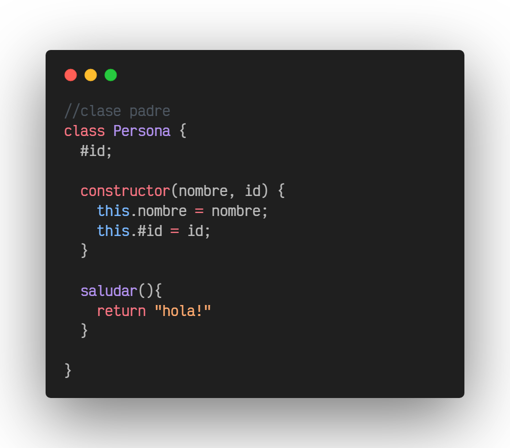
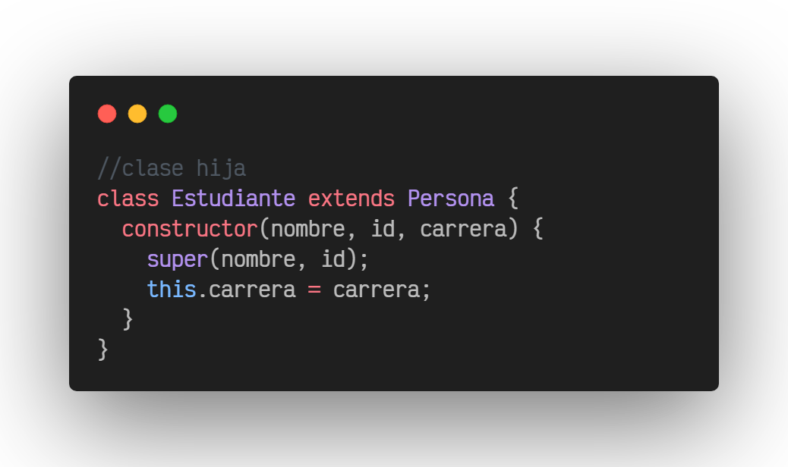
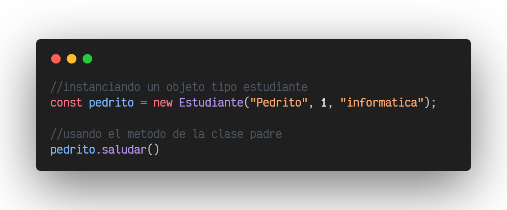

Una de las principales propiedades de las clases es la herencia. Esta
consiste en crear nuevas clases a partir de clases ya existentes,
manteniendo las propiedades de la clase original y añadiendo otras
nuevas.
La nueva clase se le denomina como clase derivada, y la o las clase a
partir de la cual se derive se denominan clases base. Una clase base
también puede ser usada como clase base para crear otras clases
derivadas.
Ejemplo de herencia en Javascript:
-Como primer paso creamos la clase padre, para efectos del ejemplo se
llamara Persona.

-Como segundo paso crearemos la clase hija, la nombraremos Estudiante,
luego usando la palabra "extends" y seguida de esta la clase Persona
estaremos indicando una relación de herencia.

-Como tercer y ultimo paso instanciaremos un objeto de nuestra clase
Estudiante, el cual le haremos uso de su método saludar, heredado de
la clase Persona.

Aspectos a considerar
No se modifica la clase existente.
La nueva clase hereda de la clase base:
Sus atributos privados y no privados.
Sus métodos.
La nueva clase no heredará de la clase base:
Sus constructores y destructores.
Métodos y datos estáticos.
Es un mecanismo de reutilización de código.
Se genera un tipo de relación (Padre - hija).
El grupo de elementos al cual pertenece un tipo incluye a los del
subtipo.